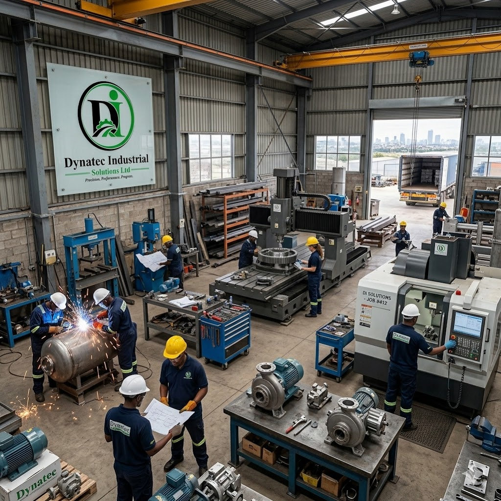

Maintenance Insight
Benefits of Preventive Mechanical Maintenance
Learn how scheduled inspections and repair plans reduce downtime, extend asset life and improve industrial reliability across Kenya’s manufacturing and processing plants.
Focus
Preventive care
Benefit
Lower downtime
Region
Kenya

Preventive Maintenance Benefits
Why Preventive Maintenance Matters
In manufacturing, processing and heavy industries, mechanical assets are major capital investments. Unplanned failures not only interrupt production but also lead to safety incidents, expensive emergency repairs and reduced equipment life. Preventive mechanical maintenance tackles these risks by shifting from reactive repairs to planned care.
Key Benefits
- Reduced downtime: Regular inspections catch wear and minor faults before they escalate into breakdowns, keeping production lines running and schedules predictable.
- Extended asset life: Lubrication, alignment, balancing and timely replacement of wear components slow degradation and extend equipment service life.
- Lower total cost of ownership: Planned maintenance allows bulk ordering of parts, scheduled labor and fewer emergency callouts, reducing overall maintenance spend.
- Improved safety and compliance: Routine checks ensure guards, sensors and safety systems are functional, helping meet regulatory and corporate standards.
- Better efficiency and quality: Well-maintained machines run at designed tolerances, improving energy efficiency, throughput and product quality.
Practical Elements of an Effective Program
- Asset inventory and criticality ranking: Identify equipment, rate criticality to operations and prioritize maintenance resources accordingly.
- Standardized inspection checklists: Use task lists for lubrication, belt tension, bearing condition, vibration and visual checks to ensure consistency.
- Scheduled intervals based on data: Define schedules using manufacturer guidance, run-hours, condition monitoring and historical failure data.
- Condition monitoring: Integrate vibration analysis, thermography, oil analysis and performance telemetry to detect issues earlier and optimize intervals.
- Spare parts strategy: Maintain a critical spares list and reorder points to minimize lead times for common failures.
- Skilled technicians and training: Invest in technician skills, standardized procedures and clear documentation to raise maintenance quality.
- Continuous improvement: Track KPIs—MTTR, MTBF, downtime hours—and use root cause analysis to eliminate recurring failures.
Measuring Success
Useful KPIs include mean time between failures (MTBF), mean time to repair (MTTR), overall equipment effectiveness (OEE), unplanned downtime percent and maintenance cost per unit produced. Improvements in these metrics demonstrate the tangible value of preventive maintenance programs.
Getting Started
Begin with a pilot on high-impact equipment, document baseline performance, implement simple checklists and inspection intervals, and add condition monitoring where it yields clear ROI. Scale the program after validating results and refining processes.
Start Small, Build Reliability
Focus on your most critical equipment first and use early wins to build momentum for a broader preventive maintenance program.